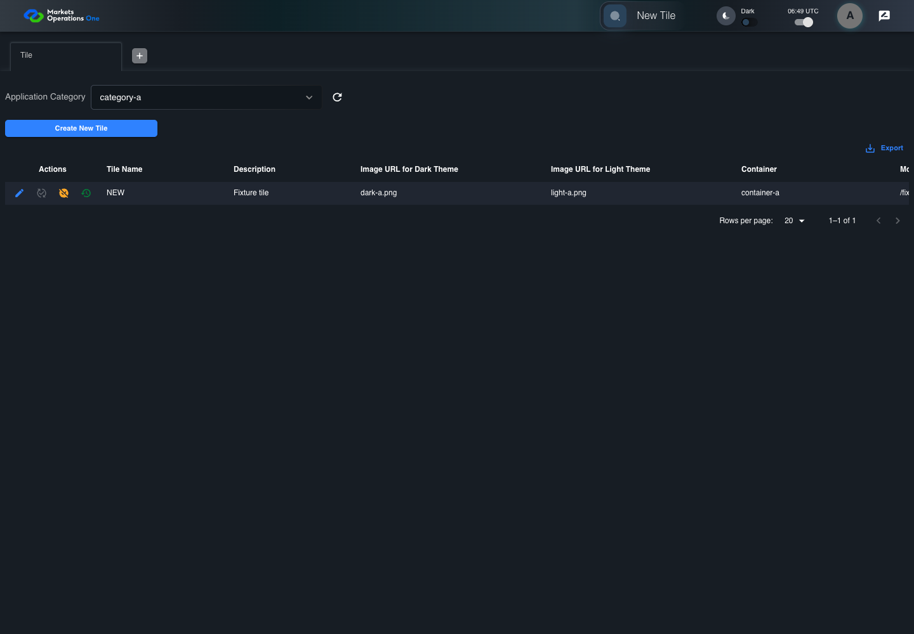

BFF-ADM-090 current BFF administration through actual UI
FAIL · application/run-072/bff-adm-090-current-bff-administration-through-actual-ui-3dcc29dd364d-attempt-1 · ACTUAL_APPLICATION_LOCAL_SERVICES
Actual current React and exact-current BFF admin controllers/services/JPA with actual migration DDL in disposable PostgreSQL. Controlled OUD/EMS2 identities and local Spring bootstrap. Fixture SQL seeds/mutates isolated records; service errors are actual database errors. Undefined agreed messages remain unresolved acceptance.
2026-10-22T06:49:31.780Z to 2026-10-22T06:49:42.641Z
Assertions and result · Artifact manifest · Exact run inputs and source hashes
Result SHA-256:d3e7db4fd384b467e6ac340306a6eb9b17f2192a31bdd3b0c4fbf4e7e203db31Retained failure details
[
{
"message": "Error: \u001b[2mexpect(\u001b[22m\u001b[31mlocator\u001b[39m\u001b[2m).\u001b[22mtoBeVisible\u001b[2m(\u001b[22m\u001b[2m)\u001b[22m failed\n\nLocator: locator('.MuiAlert-root').filter({ has: locator('.MuiAlert-message') })\nExpected: visible\nTimeout: 5000ms\nError: element(s) not found\n\nCall log:\n\u001b[2m - Expect \"toBeVisible\" locator('.MuiAlert-root').filter({ has: locator('.MuiAlert-message') }) with timeout 5000ms\u001b[22m\n\u001b[2m - waiting for locator('.MuiAlert-root').filter({ has: locator('.MuiAlert-message') })\u001b[22m\n",
"stack": "Error: \u001b[2mexpect(\u001b[22m\u001b[31mlocator\u001b[39m\u001b[2m).\u001b[22mtoBeVisible\u001b[2m(\u001b[22m\u001b[2m)\u001b[22m failed\n\nLocator: locator('.MuiAlert-root').filter({ has: locator('.MuiAlert-message') })\nExpected: visible\nTimeout: 5000ms\nError: element(s) not found\n\nCall log:\n\u001b[2m - Expect \"toBeVisible\" locator('.MuiAlert-root').filter({ has: locator('.MuiAlert-message') }) with timeout 5000ms\u001b[22m\n\u001b[2m - waiting for locator('.MuiAlert-root').filter({ has: locator('.MuiAlert-message') })\u001b[22m\n\n at BffAdminApp.errorAlert (/Users/lushevol/code/github/ratan-release-impact/workbench/e2e/support/bff-admin-app.ts:166:169)\n at /Users/lushevol/code/github/ratan-release-impact/workbench/e2e/audit-specs/bff-admin.spec.ts:49:166\n at AuditCapture.step (/Users/lushevol/code/github/ratan-release-impact/workbench/e2e/support/audit-fixture.ts:94:21)\n at /Users/lushevol/code/github/ratan-release-impact/workbench/e2e/audit-specs/bff-admin.spec.ts:18:27",
"location": {
"file": "/Users/lushevol/code/github/ratan-release-impact/workbench/e2e/support/bff-admin-app.ts",
"column": 169,
"line": 166
},
"snippet": "\u001b[90m at \u001b[39m../support/bff-admin-app.ts:166\n\n 164 | }\n 165 | async assertUnchanged():Promise<void>{expect(await this.snapshot()).toEqual(this.expectedPersisted);expect(await this.gridSnapshot()).toEqual(this.initialGrid);}\n> 166 | async errorAlert(exact?:string):Promise<void>{const alert=this.page.locator('.MuiAlert-root').filter({has:this.page.locator('.MuiAlert-message')});await expect(alert).toBeVisible();await expect(alert).toHaveClass(/MuiAlert-standardError|MuiAlert-filledError|MuiAlert-outlinedError/);if(exact)await expect(alert.locator('.MuiAlert-message')).toHaveText(exact);else {const mutation=[...this.requests].reverse().find(request=>['create','update','audit'].includes(request.operation));expect(mutation?.status).toBeGreaterThanOrEqual(400);await expect(alert.locator('.MuiAlert-message')).not.toHaveText('');await this.audit.record('undefined-message-contract',{canonical:'Agreed message is unavailable. Only real error response and visible nonempty error are characterized.',actual:await alert.innerText()});}}\n | ^\n 167 | async cell(name:string,id:string){return this.ui.reveal(adminFields[name]??name,id);}\n 168 | }\n 169 |"
}
]Machine observations
- actual-identity-projection.json
c1e3e5f7af5c9d7772cf23f186aceda9fc2162e714aa0533a439a8bac4955255 - baseline-inputs.json
c80c9987b598bf6efe6bbce8c03224a540873589b52ff4a489bb72232b743cba - bff-boundary.json
6ebcd643f2270d7763a6142864dbb123be96643f92b73fb5dcb930df3465f657 - committed-ui-submission-comparisons.json
f88b2c7e238927e5c635790bdadea99c17d0ac9f9d914456ad6f16120e6094be - concurrent-admin-a-maker.json
2aa2553b1d83fe2b03c105d3fe91157dcf6a9cee7469ce035335c0f5eb600a4b - fixture-step-10.json
3f6b0b47621bc659d4727fe8f3387662bf2d2a6a256bd65a788c4eb71d2cff8b - fixture-step-11.json
f3d77a5c0afbbad7e135cee988098f4f0b5828a8dc45a311cb0fab1a190c6004 - fixture-step-6.json
9fe54785c796f7672c9e863f6c23a8d8e9c3f0b47c8beb66deff6d232991f54b - fixture-step-7.json
7df42263aac0b936e2f8d56650fd77dc266999075ccca2e05915303c3a4a1700 - fixture-step-8.json
6d97157bbc46b89c15063bbc9945eda7eda155c797ab1548e13732bf2261d33c - fixture-step-9.json
46113ee03b5ad67a40e636464dba3139ab3553a1d9fe7b2d3c3c4747c58345da - initial-persisted-records.json
9c5a7ce59c6d24ae1566c3ab88fd6bcd980c038aac2dc299c695fe8d41031a55 - persisted-after-submit.json
34dc3cd8a89aeb2d5f2b3948893b452428a081a29fa35831517e4234d61fc0d3 - reference-snapshot-3.json
733626e8f26b9d6b4cb126c7a7384e11ab9849b16d7e2823552f6d8b775d0230 - reference-snapshot-4.json
fd0432d199d1a9f808963628bc0b291e4adaeb4b19a20db960a453d60e2d6337 - rejection-or-policy-observation.json
cedeed3acc0168ae4967550e18f0b46645da73608cc0aa17b21dd207edb5dd08 - ui-origin-bff-requests.json
94bebec90bcd218d5a85de943e043bf7915420612853107cbba0f31a3afd02e6
Screenshot capture: CAPTURED. Named frames: 19.
Step screenshot bindings: INCOMPLETE. 18/20 canonical steps have execution screenshots.
Bindings measure structural coverage only. They do not establish screenshot content quality or relevance.
Screenshot content review: NOT_REVIEWED. Recorded context: 0/19 frames. Identical image bytes: 0 repeated frames. Recorded context does not establish human visual review.
Step 19 has no screenshot from an executed step. Step 20 has no screenshot from an executed step.
Canonical step timeline
Given Admin B uses subject "admin-b" with role "FMO_ADMIN" in an isolated authenticated browser
Execution: PASSED.1. step-01 Visible state after step 1: Given Admin B uses subject "admin-b" with role "FMO_ADMIN" in an isolated authenticated browser
2026-10-22T06:49:35.277Z · 1440×1000
Step: /Users/lushevol/code/github/ratan-release-impact/workbench/tasks/ui-test-coverage-20261022/test-cases.md:18512
SHA-256:570a65e1565f588f5492e78fc25b8bf256645aa1fbc80d22a0ea47f7a7c1d33aAnd the controlled Tile fixture records the initial grid rows and persisted values
Execution: PASSED.2. step-02 Visible state after step 2: And the controlled Tile fixture records the initial grid rows and persisted values
2026-10-22T06:49:35.436Z · 1440×1000
Step: /Users/lushevol/code/github/ratan-release-impact/workbench/tasks/ui-test-coverage-20261022/test-cases.md:18513
SHA-256:564725018fb044323a3425b4475727b5760efb31e23186664883276c5de3c2f7And Category 101 has label "category-a" and Import Map 201 has Module Name "container-a"
Execution: PASSED.3. step-03 Visible state after step 3: And Category 101 has label "category-a" and Import Map 201 has Module Name "container-a"
2026-10-22T06:49:35.503Z · 1440×1000
Step: /Users/lushevol/code/github/ratan-release-impact/workbench/tasks/ui-test-coverage-20261022/test-cases.md:18514
SHA-256:40bb3c88c49d16a7cf81032473b6a0f291d43ac228a8e47bd31485f515f6daa1And both references belong to "FMO_ADMIN" and the Tile page category filter value is Category 101
Execution: PASSED.4. step-04 Visible state after step 4: And both references belong to "FMO_ADMIN" and the Tile page category filter value is Category 101
2026-10-22T06:49:35.568Z · 1440×1000
Step: /Users/lushevol/code/github/ratan-release-impact/workbench/tasks/ui-test-coverage-20261022/test-cases.md:18515
SHA-256:d7511af4580274f6f8b6d356f076d45405a79455c492fa6e353371fd237f8db9And the Tile grid has record "101" owned by "FMO_ADMIN"
Execution: PASSED.5. step-05 Visible state after step 5: And the Tile grid has record "101" owned by "FMO_ADMIN"
2026-10-22T06:49:35.636Z · 1440×1000
Step: /Users/lushevol/code/github/ratan-release-impact/workbench/tasks/ui-test-coverage-20261022/test-cases.md:18516
SHA-256:a0b63f64e255a76058e67cdce3f16ee6bcf6803c6cc8b5ed5866f3de5fe22bdfAnd the baseline fixture data defines "Tile Name" as "tile-090"
Execution: PASSED.6. step-06 Visible state after step 6: And the baseline fixture data defines "Tile Name" as "tile-090"
2026-10-22T06:49:35.704Z · 1440×1000
Step: /Users/lushevol/code/github/ratan-release-impact/workbench/tasks/ui-test-coverage-20261022/test-cases.md:18517
SHA-256:cfc21e3195965fdf33c7542b7ca2db23e2af9600d823f68fa13ffa0b05cb2ee9And the baseline fixture data defines "Module Path" as "/fixture"
Execution: PASSED.7. step-07 Visible state after step 7: And the baseline fixture data defines "Module Path" as "/fixture"
2026-10-22T06:49:35.777Z · 1440×1000
Step: /Users/lushevol/code/github/ratan-release-impact/workbench/tasks/ui-test-coverage-20261022/test-cases.md:18518
SHA-256:6f37283b5b8bcb5eed96a795fb2e23d039f51748716074cb1f87a850584e5d84And the baseline fixture data defines "Tile Path" as "/case-090"
Execution: PASSED.8. step-08 Visible state after step 8: And the baseline fixture data defines "Tile Path" as "/case-090"
2026-10-22T06:49:35.856Z · 1440×1000
Step: /Users/lushevol/code/github/ratan-release-impact/workbench/tasks/ui-test-coverage-20261022/test-cases.md:18519
SHA-256:fdacd71256b209f1533da408ff862da7fba0be5ce524f9e22e1362c0d2dcf226And the baseline fixture data defines "Role Entities" as "E-TRADE"
Execution: PASSED.9. step-09 Visible state after step 9: And the baseline fixture data defines "Role Entities" as "E-TRADE"
2026-10-22T06:49:35.936Z · 1440×1000
Step: /Users/lushevol/code/github/ratan-release-impact/workbench/tasks/ui-test-coverage-20261022/test-cases.md:18520
SHA-256:bf77c0be478dfde76f5e508b13abcc07d28fd7055dd299d46e197eabd24f9a90And the baseline fixture data defines "Filter Rule" as ""
Execution: PASSED.10. step-10 Visible state after step 10: And the baseline fixture data defines "Filter Rule" as ""
2026-10-22T06:49:36.003Z · 1440×1000
Step: /Users/lushevol/code/github/ratan-release-impact/workbench/tasks/ui-test-coverage-20261022/test-cases.md:18521
SHA-256:af183a05c960a7c4bafe5f83299157eb800a9b1a968f1662cae73a6ea9ec8eacAnd the baseline Tile references use "Aplication Category" "category-a" and "Container" "container-a"
Execution: PASSED.11. step-11 Visible state after step 11: And the baseline Tile references use "Aplication Category" "category-a" and "Container" "container-a"
2026-10-22T06:49:36.068Z · 1440×1000
Step: /Users/lushevol/code/github/ratan-release-impact/workbench/tasks/ui-test-coverage-20261022/test-cases.md:18522
SHA-256:2e935f893da90111da2334f10f6c46fe93cda7ce7aafc68ff6fc329ff2c2d15aAnd Tile record "101" is inactive when this browser loads its grid
Execution: PASSED.12. step-12 Visible state after step 12: And Tile record "101" is inactive when this browser loads its grid
2026-10-22T06:49:36.117Z · 1440×1000
Step: /Users/lushevol/code/github/ratan-release-impact/workbench/tasks/ui-test-coverage-20261022/test-cases.md:18523
SHA-256:be4deacf1afb330edd2e303d60d8a1c1d0abeada57523c15be4adfc3c010400bAnd its stored "updatedBy" value is "admin-a"
Execution: PASSED.13. step-13 Visible state after step 13: And its stored "updatedBy" value is "admin-a"
2026-10-22T06:49:36.169Z · 1440×1000
Step: /Users/lushevol/code/github/ratan-release-impact/workbench/tasks/ui-test-coverage-20261022/test-cases.md:18524
SHA-256:fd36bb5ebad9f77f81e2ed697d1d98eda6f9c8faf0be7c162e75194f2cbc532fWhen Admin B clicks the button labeled "Verify" in the Tile grid row with "Record Id" "101"
Execution: PASSED.14. step-14 Visible state after step 14: When Admin B clicks the button labeled "Verify" in the Tile grid row with "Record Id" "101"
2026-10-22T06:49:36.594Z · 1440×1000
Step: /Users/lushevol/code/github/ratan-release-impact/workbench/tasks/ui-test-coverage-20261022/test-cases.md:18525
SHA-256:0b59813c832bee6f41ad3cf0768cc75e1fbacccaa356a734282510b4721f7f55Then the dialog titled "verify ID: 101" is visible on the Tile administration page
Execution: PASSED.15. step-15 Visible state after step 15: Then the dialog titled "verify ID: 101" is visible on the Tile administration page
2026-10-22T06:49:36.676Z · 1440×1000
Step: /Users/lushevol/code/github/ratan-release-impact/workbench/tasks/ui-test-coverage-20261022/test-cases.md:18526
SHA-256:52ce9068b41e79559ea1b12f059b3eccbf6348f7d3b7c3578fab9a60488e9931When Admin A completes a controlled maker update after this verification dialog loads
Execution: PASSED.16. step-16 Visible state after step 16: When Admin A completes a controlled maker update after this verification dialog loads
2026-10-22T06:49:36.844Z · 1440×1000
Step: /Users/lushevol/code/github/ratan-release-impact/workbench/tasks/ui-test-coverage-20261022/test-cases.md:18527
SHA-256:5649b3787bc7bbcd09b0258bc706c8c20d0d359fcbdf35d64db3f70e14a322b2And Admin B clicks the button labeled "Verified" in dialog "verify ID: 101"
Execution: PASSED.17. step-17 Visible state after step 17: And Admin B clicks the button labeled "Verified" in dialog "verify ID: 101"
2026-10-22T06:49:37.136Z · 1440×1000
Step: /Users/lushevol/code/github/ratan-release-impact/workbench/tasks/ui-test-coverage-20261022/test-cases.md:18528
SHA-256:1c5afa0473f95fdb3ed69a7a36b73b49eb82e500c5be5e70d0b3e3650f67bfc3Then the alert with severity "error" in the portal snackbar displays the agreed message for a stale-verification error
Execution: FAILED.18. step-18-failure Visible state when step 18 failed. Later steps did not execute.
2026-10-22T06:49:42.184Z · 1440×1000
Step: /Users/lushevol/code/github/ratan-release-impact/workbench/tasks/ui-test-coverage-20261022/test-cases.md:18529
SHA-256:a74fc7701f3afb052a8a90586e35e16f0ba4b58df7c4304f02e4a0d07ccbb132And in the Tile data grid with column "Record Id", the "Verified?" cell for Tile record "101" has status tooltip "Unverified or Deactivated" on the Tile administration page
Execution: NOT_EXECUTED.No screenshot is recorded for this step. No executed state is claimed.
And the persisted-record readback for record "101" has "active" equal to false
Execution: NOT_EXECUTED.No screenshot is recorded for this step. No executed state is claimed.
Additional named frames

The visible state when the test failed.
2026-10-22T06:49:42.256Z · 1440×1000Step: Test source: /Users/lushevol/code/github/ratan-release-impact/workbench/e2e/audit-specs/bff-admin.spec.ts:11
SHA-256:
5f370bb4710f665f827ca4d1efc0ac5a232b3fa53231e6fbe8c47bb009c5de73Screenshots establish visible state only. Assertions and traces support functional claims.